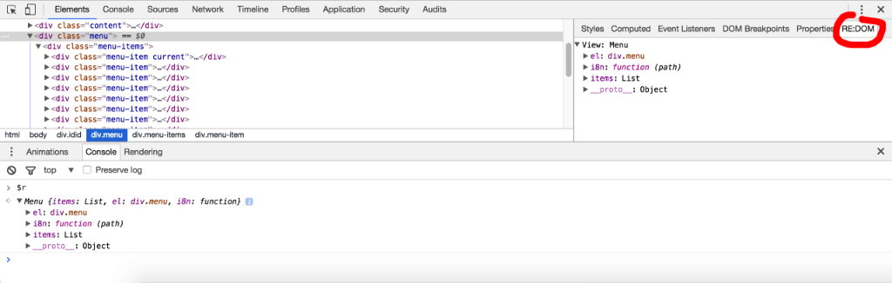

RE:DOM is a tiny (2 KB) DOM library by Juha Lindstedt and contributors, which adds some useful helpers to create DOM elements and keeping them in sync with the data.
Because RE:DOM is so close to the metal and doesn't use virtual dom, it's actually faster and uses less memory than almost all virtual dom based libraries, including React (benchmark).
It's also easy to create reusable components with RE:DOM.
Another great benefit is, that you can use just pure JavaScript, so no complicated templating languages to learn and hassle with.
Only if you use el.extend, svg.extend or list.extend, you'll need at least IE9. All other features should work even in IE6. So for the most parts basically almost every browser out there is supported.
You can install RE:DOM from npm by calling:
npm i redom
RE:DOM also supports UMD:
<script src="https://redom.js.org/redom.min.js"></script>
You can also use the project generator, which will also install a file watcher and bundler. You can find it here.
RE:DOM also works on server side, by using NO:DOM.
You can install RE:DOM dev tools for Chrome

el (alias: html) is a helper for document.createElement with couple of differences.
The basic idea is to simply create elements with el and mount them with mount, almost like you would do with plain JavaScript:
import { el, mount } from 'redom';
const hello = el('h1', 'Hello RE:DOM!');
mount(document.body, hello);
<body>
<h1>Hello RE:DOM!</h1>
</body>
String and Number arguments (after the query) generate text nodes. You can also use the text helper, which will return a reference to the text node:
import { text, mount } from 'redom';
const hello = text('hello');
mount(document.body, hello);
hello.textContent = 'hi!';
<body>hi!</body>
You can use # and . as shortcuts for defining element IDs and class names. div is the default tag name:
el('')
el('#hello')
el('.hello')
el('span.hello')
<div></div>
<div id="hello"></div>
<div class="hello"></div>
<span class="hello"></span>
You can define styles with strings or objects:
el('div', { style: 'color: red;' })
el('div', { style: { color: 'red' } })
<div style="color: red;"></div>
<div style="color: red;"></div>
Properties and attributes are auto-detected:
el('input', { type: 'email', autofocus: true, value: 'foo' })
<input type="email" autofocus> // $0.value === 'foo'
You can also define children while creating elements:
el('a',
el('b',
el('c')
)
)
<a>
<b>
<c></c>
</b>
</a>
Passing an array of children also works:
el('a', [
el('b'),
el('c')
]);
<a>
<b></b>
<c></c>
</a>
It's possible to add children conditionally, by using boolean:
el('form',
el('input', { type: 'email' }),
!forgot && el('input', { type: 'password' })
);
You can add middleware by defining a function:
el('h1', middleware, 'Hello RE:DOM!');
function middleware (el) {
el.className = 'hello';
}
<h1 class="hello">Hello RE:DOM!</h1>
You can read more about components here, but here's how you attach them:
class B {
constructor () {
this.el = el('b');
}
}
el('a',
new B()
)
<a>
<b></b>
</a>
You can use el or html:
import { el, html } from 'redom';
el('div')
html('div')
<div></div>
<div></div>
el and html only create HTML elements. If you want to create a SVG element, you must use svg:
import { svg, mount } from 'redom';
const drawing = svg('svg',
svg('circle', { r: 50, cx: 25, cy: 25 })
);
mount(document.body, drawing);
<body>
<svg>
<circle r="50" cx="25" cy="25"></circle>
</svg>
</body>
Please use mount/unmount/setChildren every time you need to mount/unmount elements inside a RE:DOM app. These functions will trigger lifecycle events, add references to components etc.
You can mount elements/components with mount(parent, child, [before]). If you define the third parameter, it works like insertBefore and otherwise it's like appendChild.
Mount will trigger the onmount lifecycle event the first time you mount a child. If you mount the same child again to the same parent, onremount gets called. If you mount it to another place, onunmount and onmount get called. Read more about lifecycle events here.
import { el, mount } from 'redom';
const hello = el('h1', 'Hello RE:DOM!');
// append element:
mount(document.body, hello);
// insert before the first element:
mount(document.body, hello, document.body.firstChild);
If you need to remove elements/components, use unmount(parent, child). That will trigger the onunmount lifecycle event:
unmount(document.body, hello);
RE:DOM uses setChildren(parent, children) under the hood for lists. When you call setChildren, RE:DOM will add/reorder/remove elements/components automatically by reference:
import { el, setChildren } from 'redom';
const a = el('a');
const b = el('b');
const c = el('c');
setChildren(document.body, [a, b, c]);
setChildren(document.body, [c, b]);
<body>
<c></c>
<b></b>
</body>
For example, if you need to clear the document body, you can also use setChildren(document.body, []);.
There's also a shortcut for replacing children with a single component / element: setChildren(document.body, app);.
A helper for updating attributes and properties. It will auto-detect attributes and properties:
import { el, setAttr } from 'redom';
const hello = el('h1', 'Hello RE:DOM!');
setAttr(hello, {
style: { color: 'red' },
className: 'hello' // You could also just use 'class'
});
There's also a shortcut for updating the style attribute:
import { setStyle } from 'redom';
setStyle(hello, { color: 'green' });
It's really easy to create components with RE:DOM.
Simply define a class or function, which returns an object with at least an el property, and in case of list also the update property:
import { el, mount } from 'redom';
class Hello {
constructor () {
this.el = el('h1');
}
update (data) {
this.el.textContent = 'Hello ' + data + '!';
}
}
const hello = new Hello();
hello.update('RE:DOM!');
mount(document.body, hello);
You don't have to manually diff class names / properties / attributes except when dealing with URLs.
If you change the src of img, iframe or video elements, the browser will reload the asset/website even if the value did not actually change.
One way to work around this would be:
import { el, mount } from 'redom';
class Image {
constructor () {
this.el = el('img');
this.data = {};
}
update (data) {
const { url } = data;
if (url !== this.data.url) {
this.el.src = url;
}
this.data = data;
}
}
RE:DOM supports true lifecycle events since v2.0.0. Three events are defined: onmount, onremount and onunmount.
onmount gets called.onremount gets called.onunmount gets called.import { el, mount } from 'redom';
class Hello {
constructor () {
this.el = el('h1', 'Hello RE:DOM!');
}
onmount () {
console.log('mounted Hello');
}
onremount () {
console.log('remounted Hello');
}
onunmount () {
console.log('unmounted Hello');
}
}
class App {
constructor () {
this.el = el('app',
this.hello = new Hello()
);
}
onmount () {
console.log('mounted App');
}
onremount () {
console.log('remounted App');
}
onunmount () {
console.log('unmounted App');
}
}
const app = new App();
mount(document.body, app);
mount(document.body, app);
mount(document.head, app);
unmount(document.head, app);
mounted App
mounted Hello
remounted App
remounted Hello
unmounted App
unmounted Hello
mounted App
mounted Hello
unmounted App
unmounted Hello
When you have dynamic data, it's not that easy to manually keep the elements and the data in sync.
That's when the list helper comes to rescue.
To use list, just define a parent node and component:
import { el, list, mount } from 'redom';
class Li {
constructor () {
this.el = el('li');
}
update (data) {
this.el.textContent = 'Item ' + data;
}
}
const list = list('ul', Li);
mount(document.body, list);
list.update([1, 2, 3]);
list.update([2, 2, 4]);
When you call List.update, the list will automatically:
.update for all components, except removed onesNormally list will update by index, so it only adds/removes the last item.
If you want to define a key, you can do that by adding a third parameter to the list. With key, the list will automatically insert/reorder/remove elements by that key of each object in the list.
import { el, list, mount } from 'redom';
class Li {
constructor () {
this.el = el('li');
}
update (data) {
this.el.textContent = data.name;
}
}
const list = list('ul', Li, '_id');
mount(document.body, list);
list.update([
{ _id: 1, name: 'Item 1' },
{ _id: 2, name: 'Item 2' },
{ _id: 3, name: 'Item 3' }
]);
setTimeout(() => {
list.update([
{ _id: 3, name: 'Item 3' },
{ _id: 2, name: 'Item 2' }
]);
}, 1000);
There's couple of ways to do a list component:
class Td {
constructor () {
this.el = el('td');
}
update (data) {
this.el.textContent = data;
}
}
const Tr = list.extend('tr', Td);
const table = el('table', Tr);
mount(document.body, table);
class Td {
constructor () {
this.el = el('td');
}
update (data) {
this.el.textContent = data;
}
}
class Tr {
constructor () {
this.el = list('tr', Td);
}
update (data) {
this.el.update(data);
}
}
const table = el('table', Tr);
mount(document.body, table);
This works, but in case you need to access this.el.el (<tr>) in Tr, I recommend to use the following:
class Td {
constructor () {
this.el = el('td');
}
update (data) {
this.el.textContent = data;
}
}
class Tr {
constructor () {
this.el = el('tr');
this.list = list(this.el, Td);
}
update (data) {
this.list.update(data);
}
}
const table = el('table', Tr);
mount(document.body, table);
or the other way around:
this.list = list('tr', Td);
this.el = this.list.el;
Router is a component router, which will create/update/remove components based on the current route.
import { router } from 'redom';
import { Home, About, Contact } from './sections/index'
const app = router({
home: Home,
about: About,
contact: Contact
});
mount(document.body, app);
app.update('home', data);
app.update('about', data);
The example will:
Home componentdataAbout componentdataYou can find more examples on RE:DOM website!
You're welcome to join #redom @ koodiklinikka.slack.com (get invitation by entering your email at koodiklinikka.fi). If you have any questions / feedback, you can also raise an issue on GitHub.
RE:DOM is on GitHub, source is here. To start developing:
npm inpm run devPull requests are more than welcome!